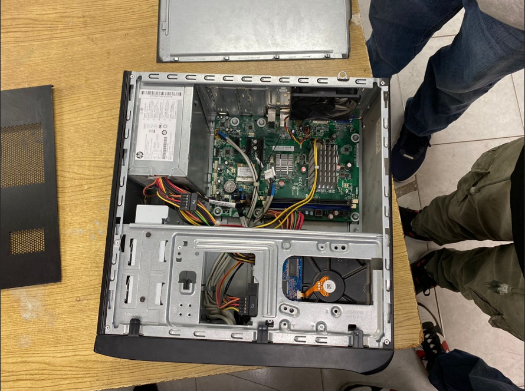
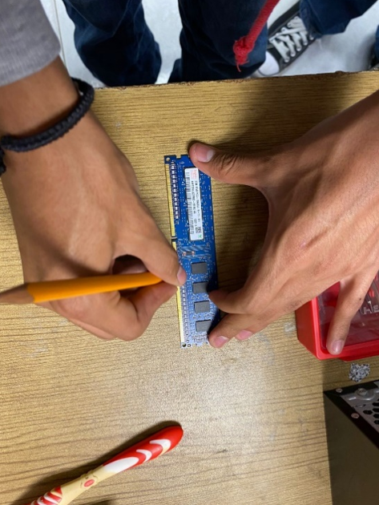

Mantenimiento y Configuración de Equipos
Durante este semestre, en esta Unidad de Aprendizaje aprendimos todo lo necesario para hacerle un mantenimiento básico a nuestras computadoras, laptops e incluso a celulares y tablets. Vimos las partes de una computadora, sobre cómo mantenerla limpia en su hardware y en su software. En esta práctica realizamos el mantenimiento preventivo, que es limpiar una computadora de escritorio.
1. Iniciamos retirando la tapa del costado al equipo para realizar su limpieza interna.
2. Después desconectamos las memorias RAM para poder limpiar sus ranuras y limpiarlas.
3. Las limpiaremos con un borrador de lápiz.
4. Posteriormente seguimos con la desconexión de todos los cables cuidadosamente para limpiarlos.
5. Utilizaremos desarmadores para poder retirar la unidad de disco duro, de esta manera alcanzaremos de mejor manera los lugares que nos faltan limpiar. Y de una vez limpiar el disco duro.
6. Empezamos con el proceso de limpieza interna del gabinete.
7. En este momento utilizaremos aire comprimido para limpiar mejor la computadora.
8. También usaremos una brocha.
9. Retiraremos la parte delantera del gabinete para limpiarlo correctamente.
10. Limpiamos los ventiladores de la computadora con aire comprimido, cuidando que las aspas no se muevan para evitar que se produzca electricidad, aunque no importa mucho ya que están desconectados.
11. Posteriormente, limpiaremos la fuente de alimentación con aire comprimido.
12. Finalizamos conectando de nuevo todos los cables y colocando correctamente las memorias RAM.
13. Fin